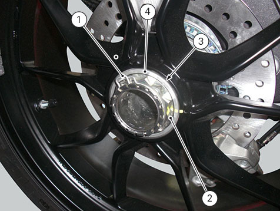

Removing the rear wheel
Remove the silencer. (
Removing the silencer
)
Place the motorcycle on the rear service stand and engage the 1st gear.
Remove the circlip (1).
Using a suitable socket, loosen the wheel nut (2).
Fully unscrew the nut (2), then slide off washer (3) and spacer (4).
Remove the rear wheel from the motorcycle.
